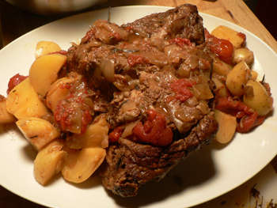

Pot roast teaser
After nearly four hours in a 325º oven, here is what remained of my giant pot roast:

It was fork tender and delicious, as promised. Only three of us were at the table, though, so we’ll be living in leftovers for a week. Mom has promised us a 101 post on this particular piece of meat, so I’ll leave it at that!
Comments
Hey, it looks tasty to me!
Perhaps it would be worth the time to slice up some of the leftovers and put them in a salad with some of the recently described dressing? :)
Hmmm, pot roast salad, that’s a thought. Have you been enjoying pot roast sandwiches? I think they are among the world’s best sandwiches myself.
We have a restaurant here in Pittsburgh, Atria’s, that specializes in pot roast nachos and they are pretty tasty, also a meal in themselves – basically chunks of pot roast scattered over tortilla chips, topped with salsa, cheddar cheese, and sour cream, and heated until the cheese starts to melt. I can’t remember if they put guacamole on them, too, but I don’t think so; of course you could customize them to your own taste.
I’m so sad I missed the pot roast! It looks delicious, and way more fun than sitting on the Chinatown bus, which is what I was doing instead. Next time!
Add a comment